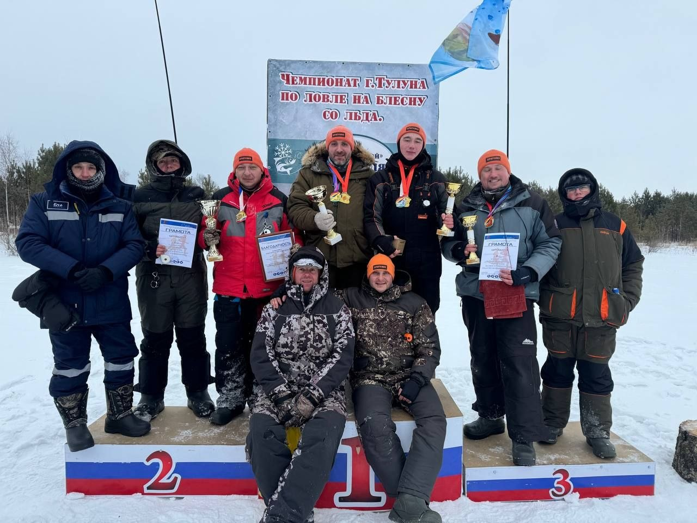

Ловля на блесну со льда — это официальная дисциплина, в которой спортсмены используют искусственные приманки для активного поиска хищных рыб. Главная особенность — высокая подвижность и командный характер.

Фото с соревнований по ловле на блесну
Тур длится 5-7 часов. За день спортсмен может пробурить от 20 до 80 лунок вручную. Это спорт с очень высокими физическими требованиями.